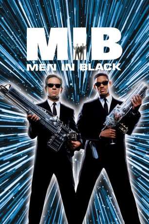

#279 Men in Black 1
Auszeichnungen: 1 Oscars gewonnen für 2 Oscars nominiert
 gesehen am 09.03.2015
gesehen am 09.03.2015
 
 IMDB-Wertung: 7.3 / 10
IMDB-Wertung: 7.3 / 10  Metascore: 71
Metascore: 71 
Nur die Men In Black kennen das bestgehütete Geheimnis der Welt: auf der Erde wimmelt es von Aliens! Außerirdische der unterschiedlichsten Art haben sich, als Menschen getarnt, auf dem Planeten breitgemacht. Einige werden geduldet, andere aufgespürt, gejagt, vertrieben. Und diesen Job erledigen die beiden zähesten unter den Alienjägern, die Agenten Mr. K und Mr. J. Doch dann landet ein intergalaktisches Riesenmonster auf der Erde - sein Ziel: die totale Vernichtung der Welt. Trotz optimaler High-Tech-Bewaffnung haben die beiden Super-Agenten jetzt einen lebensgefährlichen Auftrag. Als sie die Fährte des außerirdischen Eindringlings aufgenommen haben, scheint es fast zu spät zu sein - eine globale Katastrophe bahnt sich an...
Jahr: 1997
Dauer: 98 Minuten
FSK: 12
Land: USA Studio: Columbia PicturesTonspuren: DTS-HD - ,
Untertitel: Deutsch, Englisch,
Auflösung: 1080p (1920×1040) Größe: 10956 MB
Genre: Sci-Fi, Komödie, Abenteuer, Mystery
Regisseur:  Barry Sonnenfeld
Barry Sonnenfeld
Drehbuch: Lowell Cunningham, Ed Solomon, Ed Solomon
Soundtrack: Danny Elfman
Darsteller:
 Tommy Lee Jones als Kay
Tommy Lee Jones als Kay Will Smith als Jay
Will Smith als Jay Linda Fiorentino als Laurel Weaver
Linda Fiorentino als Laurel Weaver Vincent D'Onofrio als Edgar
Vincent D'Onofrio als Edgar Rip Torn als Zed
Rip Torn als Zed Tony Shalhoub als Jeebs
Tony Shalhoub als Jeebs Siobhan Fallon Hogan als Beatrice
Siobhan Fallon Hogan als Beatrice- Mike Nussbaum als Gentle Rosenburg
 Jon Gries als Van Driver
Jon Gries als Van Driver Sergio Calderón als José
Sergio Calderón als José Carel Struycken als Arquillian
Carel Struycken als Arquillian Fredric Lehne als INS Agent Janus
Fredric Lehne als INS Agent Janus Kent Faulcon als 1st Lt. Jake Jensen
Kent Faulcon als 1st Lt. Jake Jensen- John Alexander als Mikey
 Keith Campbell als Perp
Keith Campbell als Perp Patrick Breen als Mr. Redgick
Patrick Breen als Mr. Redgick Becky Ann Baker als Mrs. Redgick
Becky Ann Baker als Mrs. Redgick Sean Whalen als Passport Officer
Sean Whalen als Passport Officer- Michael Willis als Cop in Morgue
 Willie C. Carpenter als Police Inspector
Willie C. Carpenter als Police Inspector David Cross als Morgue Attendant
David Cross als Morgue Attendant Charles C. Stevenson Jr. als MIB Agent B
Charles C. Stevenson Jr. als MIB Agent B Steve Rankin als INS Agent
Steve Rankin als INS Agent- Andy Prosky als INS Agent
- Michael Kaliski als First Contact Alien
 Debbie Lee Carrington als Alien Father
Debbie Lee Carrington als Alien Father Verne Troyer als Alien Son
Verne Troyer als Alien Son- Mark Setrakian als Rosenberg Alien
 Drew Massey als Worm Guy
Drew Massey als Worm Guy Danny DeVito als Alien on TV Monitor , uncredited
Danny DeVito als Alien on TV Monitor , uncredited John Elsen als NYPD Sergeant , uncredited
John Elsen als NYPD Sergeant , uncredited- Newt Gingrich als Alien on TV Monitor , uncredited
- Karen Lynn Gorney als Announcer , uncredited
 Adrian Lee als Wall Street Broker , uncredited
Adrian Lee als Wall Street Broker , uncredited George Lucas als Alien on TV Monitor , uncredited
George Lucas als Alien on TV Monitor , uncredited- Isaac Mizrahi als Alien on TV Monitor , uncredited
- Anthony Robbins als Alien on TV Monitor , uncredited
 Al Roker als Alien on TV Monitor , uncredited
Al Roker als Alien on TV Monitor , uncredited Barry Sonnenfeld als Alien on TV Monitor , uncredited
Barry Sonnenfeld als Alien on TV Monitor , uncredited Chloe Sonnenfeld als Alien on TV Monitor , uncredited
Chloe Sonnenfeld als Alien on TV Monitor , uncredited Steven Spielberg als Alien on TV Monitor , uncredited
Steven Spielberg als Alien on TV Monitor , uncredited Sylvester Stallone als Alien on TV Monitor , archive footage, uncredited
Sylvester Stallone als Alien on TV Monitor , archive footage, uncredited- Dionne Warwick als Alien on TV Monitor , uncredited
 Richard Hamilton als Dee
Richard Hamilton als Dee- Ken Thorley als Zap-Em Man
 Harsh Nayyar als News Vendor
Harsh Nayyar als News Vendor- Peter Linari als Tow Truck Driver
- Boris Leskin als Cook
- Michael Goldfinger als NYPD sergeant
- Alpheus Merchant als Security Guard
Datei: X:\4-Tetralogie(M-Z)\Men in Black\Men in Black 1 (1997, FSK12, 1920x1040).mkv seit 15.02.2015
Festplatte: HD Collection-3(N-Z)-6(A-Z)
 Es gibt insgesamt 8 Filme in der Gruppe '4-Tetralogie(M-Z)\Men in Black'
Es gibt insgesamt 8 Filme in der Gruppe '4-Tetralogie(M-Z)\Men in Black'